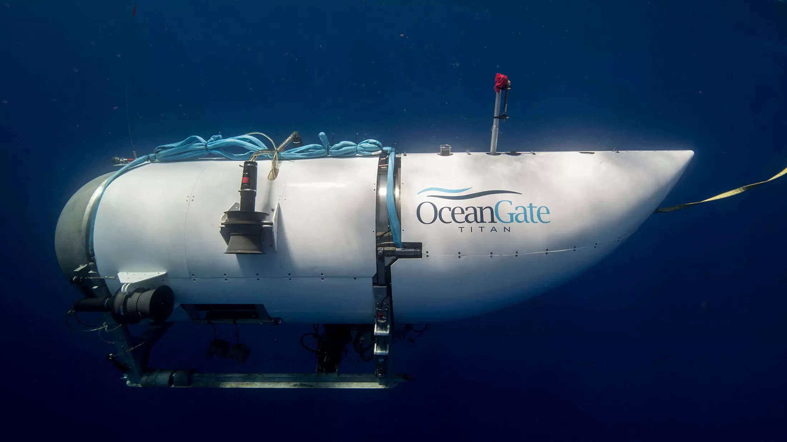
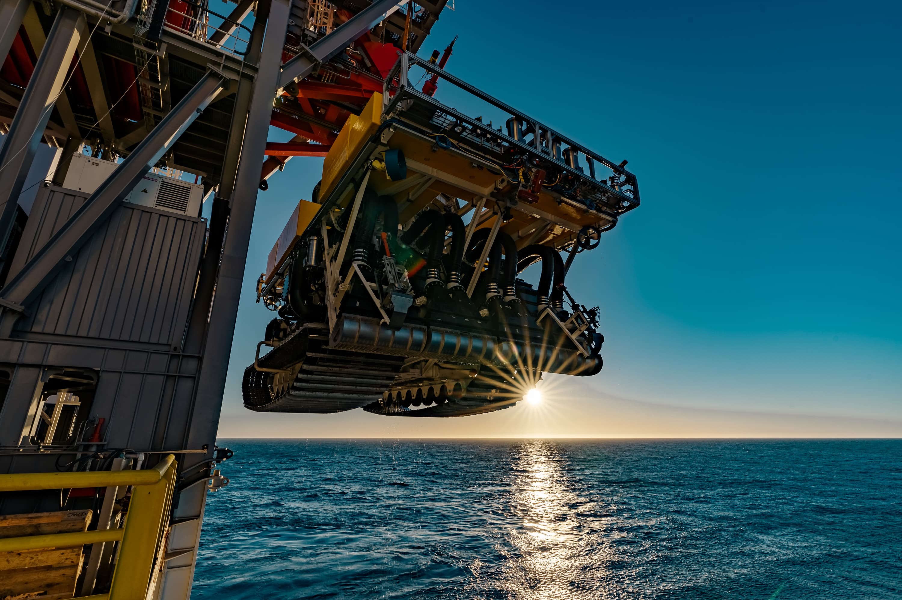
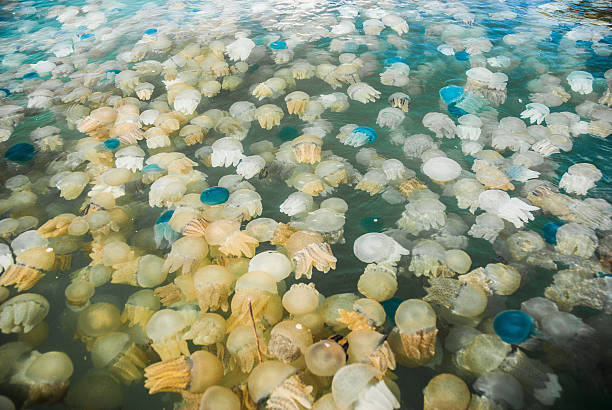

Titan Submarine Accident

A tragedy struck the ocean exploration community on Sunday, June 18, 2023, when a submersible named Titan imploded while diving to the Titanic wreck site. The sub was operated by OceanGate, a company that offered expeditions to explore and document the Titanic, which sank in 1912 after hitting an iceberg. All five passengers on board the sub were killed instantly by the implosion and explosion that followed.
The Titan was a state-of-the-art submersible that could withstand the immense water pressure at depths of up to 4,000 meters. It had a cylindrical shape with a carbon fibre tube inserted between two titanium end caps. It could accommodate up to five people, including a pilot and a co-pilot. It was equipped with cameras, lights, sonar and other sensors to capture images and data of the Titanic and other underwater sites.
The Titan had completed several successful dives to the Titanic before the fatal accident. It had also been used for other missions, such as exploring a sunken World War II ship and a coral reef. The sub was praised for its innovative design and performance by experts and enthusiasts. It was considered one of the most advanced submersibles in the world and a symbol of human curiosity and achievement.
Learn more
Rise of Deep sea mining

Deep-sea mining is the extraction of minerals from the seabed, especially in areas beyond national jurisdiction (ABNJ) or the high seas, which cover almost half of the Earth’s surface and are home to a rich biodiversity and ecosystem services.
The main targets of deep-sea mining are polymetallic nodules, which are potato-sized rocks that contain metals such as manganese, nickel, copper and cobalt; polymetallic sulphides, which are formed by hydrothermal vents and contain metals such as zinc, lead, silver and gold; and cobalt-rich crusts, which are found on seamounts and contain metals such as cobalt, iron and platinum.
The International Seabed Authority (ISA), a UN body that regulates the exploration and exploitation of the seabed in ABNJ, has issued 30 contracts to 21 countries and entities for deep-sea mining exploration. The ISA is also developing a mining code that will set the rules and standards for commercial exploitation, which could start as early as 2024.
Learn more
Jellyfish Blooms and Climate Change

Jellyfish are ancient and diverse animals that have been around for more than 500 million years. They belong to two phyla: Cnidaria, which includes true jellyfish, box jellyfish and sea anemones; and Ctenophora, which includes comb jellies. They have simple body plans, consisting of a bell-shaped or spherical body with tentacles, mouth, stomach and gonads. They have no brain, heart, bones or eyes, but some have light-sensitive organs or bioluminescent cells.
Jellyfish blooms are events when large numbers of jellyfish gather in a certain area, usually due to favourable environmental conditions or biological triggers. Blooms can last from days to months and can cover hundreds of square kilometres. Blooms can occur naturally as part of the life cycle of some jellyfish species, which have complex reproductive strategies involving both sexual and asexual phases. Some jellyfish can produce clones of themselves by budding or splitting, while others can revert from adult to juvenile stages, creating a potentially immortal population.
There is no definitive answer to this question, as there is a lack of long-term and global data on jellyfish populations and distributions. However, some studies have suggested that jellyfish blooms have become more frequent and intense in some regions over the past few decades, such as the Mediterranean Sea, the Black Sea, the Gulf of Mexico and the East Asian seas. These regions are also affected by human activities such as overfishing, pollution, coastal development and aquaculture, which may create favourable conditions for jellyfish to thrive.
Learn more